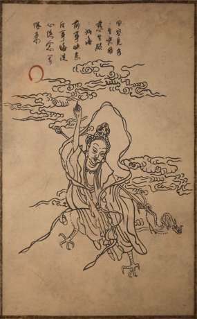

灵吉菩萨

因空见色色生灾，因慈生欲欲如海。
前事快意后事悔，洗心绝念等风来。
| 名称 | 灵吉菩萨 |
| 称号 | 无头僧 |
| 地点 | 黄风岭 |
| 特征 | 被斩首的菩萨，与黄风怪有深仇 |
概述
灵吉菩萨是黄风岭中的神秘人物，即无头僧的真身。在《西游记》中曾帮助唐僧师徒降服黄风大圣。他与黄风怪之间似有深仇大恨，但关于他被斩首的原因，众说纷纭。
背景
关于灵吉菩萨被斩首的往事，各方说法不一。虎先锋认为这是黄风大圣最痛恨的人物，拜师之举不过是为求庇佑。沙国王则透露曾见过一只背负佛头的大虫子��与灵吉被斩的头颅极为相似。后来沙国遭遇鼠祸，黄风大圣称是灵吉引来的灾祸。黄风大圣本人对此事的评价是："灾人者，人必反灾之。不是我，也会有别人。"
相关人物评价
虎先锋
大王的师父，岂是我等可议论的？不过，我曾听父亲提起，大王最恨这鸟人。说是拜师，我倒寻思是为求个庇佑。山野妖怪，就得看开神佛哪有什么垂怜，各取所需罢了。
沙国王
昔年，大王替我那小国消灾解难时，我曾见过一眼那大虫子。它背上有个佛头，与大王砍的那脑袋，一模一样哩。哎，后来我那城中，人人都变了老鼠，大王只说是他引来的祸事，就带着手下都走了。我知道，大王其实不想走的，他一直想让妖怪们，过些体面日子……
沙二郎
大王，不坏。大鸟，活该。
马天霸
偷油的老鼠上高台，定是有人架梯来。
黄风大圣
灾人者，人必反灾之。不是我，也会有别人。
考据
灵吉菩萨是《西游记》中虚构的人物。游戏中，灵吉菩萨的大鸟形象，可能源自佛教中的"孔雀大明王菩萨"。
基本信息
| 名称 | 灵吉菩萨 |
| 称号 | 无头僧 |
| 地点 | 黄风岭 |
| 特征 | 被斩首的菩萨，与黄风怪有深仇 |
| 相关人物 | 黄风大圣、沙国王、虎先锋 |